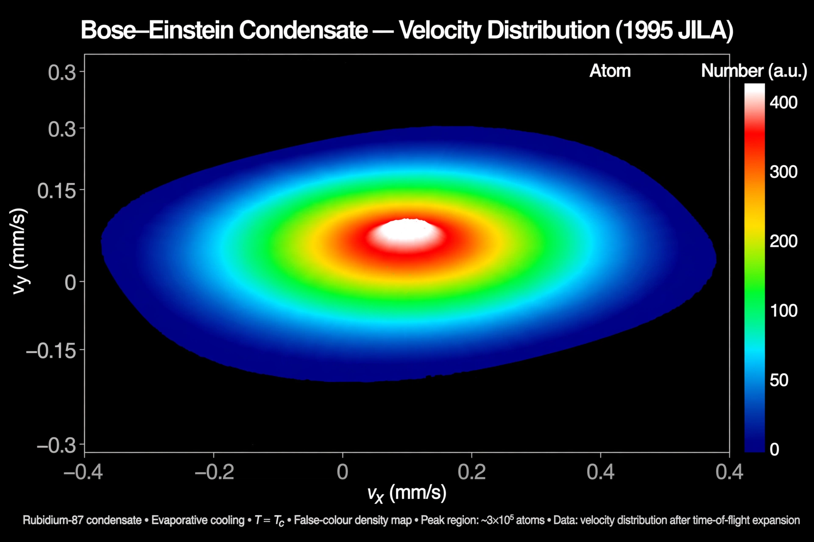

Bose–Einstein condensate
| Predicted | 1924–25, Satyendra Nath Bose and Albert Einstein |
|---|---|
| First created | 1995 (Boulder and MIT groups) |
| Typical temperature | ~100 nanokelvin |

[Image: False-colour time-of-flight image of a Bose–Einstein condensate: a sharp central peak in the velocity distribution]In condensed matter physics, a Bose–Einstein condensate (BEC) is a state of matter that is typically formed when a gas of bosons at very low density is cooled to temperatures very close to absolute zero (−273.15 °C). Under such conditions, a large fraction of the bosons occupy the lowest quantum state, at which microscopic quantum-mechanical phenomena — particularly wavefunction interference — become apparent macroscopically.
The state was predicted in 1924–25 by Satyendra Nath Bose and Albert Einstein as a consequence of Bose–Einstein statistics. It was first produced in the laboratory in 1995 — in dilute vapours of rubidium (Eric Cornell and Carl Wieman, Boulder) and sodium (Wolfgang Ketterle, MIT) — work recognised by the 2001 Nobel Prize in Physics.
Physics
BEC occurs when the thermal de Broglie wavelength of the atoms grows comparable to the spacing between them: the individual wave packets overlap and merge into a single macroscopic wave function described by the Gross–Pitaevskii equation. Laboratory BECs are made by laser cooling followed by evaporative cooling in magnetic traps, reaching ~100 nK. They display superfluid-like behaviour (quantised vortices), coherence over the whole sample, and can slow light to walking pace or stop it entirely.